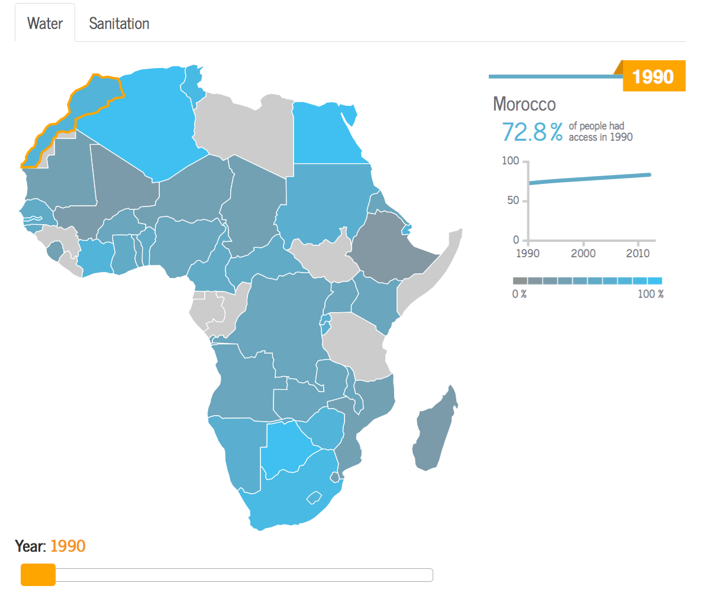
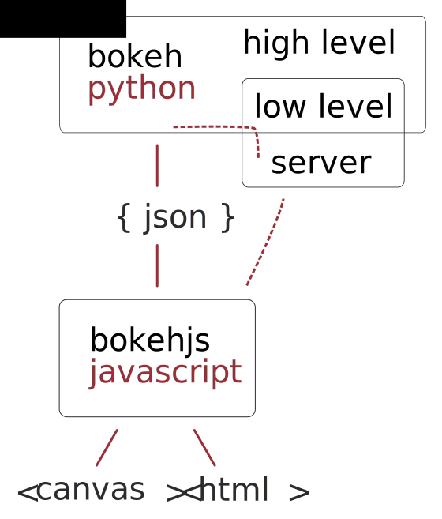

Interactive data for the web
Bokeh for web developers
Sarah Bird

Bokeh
- Data visualization libary
- Web
- Interactive
- Roots in data science


Why bokeh?
- python vs javascript
- mid-data (and big-data)
- real-time data updates
- server-side processing
My new default
http://www.wateraid.org/what-we-do/the-crisis/africa-wash-map
https://github.com/aptivate/africawatermap
Aptivate | d3.js
WASH = water, sanitation & hygiene

Charts interface
..views.py
from bokeh.charts import Line
from bokeh.embed import components, Resources
chart = Line(data)
embed_script, embed_div = components(chart, resources=Resources())
..template.html
{{ embed_div|safe }}
{{ embed_script|safe }}
chart = Line(data)

Getting the data
data - DataFrame - pandas.pydata.org
In[4]: data.head()
Out[4]:
year value
1990 42.4
1991 42.4
1992 42.4
1993 42.4
1994 43.0
Getting the data
Django Queryset
..views.py
from pandas import DataFrame
from .models import StatValue
stats = StatValue.objects.filter(description__code=stat_code)
stats = stats.values('value', 'year', 'country_id')
stats_df = DataFrame.from_records(stats, coerce_float=True)
Raw SQL
import pandas as pd
from sqlalchemy import create_engine
engine = create_engine('sqlite:///:memory:')
data_from_table = pd.read_sql_table('data', engine)
data_from_query = pd.read_sql_query('SELECT * FROM data', engine)
pandas.DataFrame, bokeh.charts.Line

{kind=link}
NOT PRETTY

Charts Intermission
- Charts are awesome!
- Area, Bar, BoxPlot, Donut, Dot, HeatMap, Histogram, Horizon, Line, Scatter, Step, TimeSeries
- Great way to get started
- Code is interesting for learning bokeh
bokeh/bokeh/charts/builder/*_builder.py
Plot
from bokeh.models import Plot
plot = Plot()
plot.add_glyph()
plot.add_layout()
plot.add_tools()
Glyph (shape)
from bokeh.models import Rect, Circle, Line, Triangle, ...
Tools (interactions)
from bokeh.models import (
TapTool, HoverTool,
BoxSelectTool, BoxZoomTool, WheelZoomTool, PanTool,
ResetTool, ResizeTool, ....
)
CSS Intermission
- Canvas - no css required
- Bokeh needs some css - tools, hover styling, slider styling
- Bokeh's built-in css is large
- I prefer to roll my own
bokeh/bokehjs/build/css/bokeh.css
Embedding intermission
from bokeh.embed import components, Resources
embed_script, embed_div = components(chart, resources=Resources())
{{ embed_div|safe }}
{{ embed_script|safe }}
- Want to load bokehjs async or ...
- Copy bokeh's templates to make your own
bokeh/bokeh/_templates/*
- Useful for making responsive plots
See the talk repo
Widgets
from bokeh.models.widgets import Tabs, Panel
from bokeh.plotting import vplot, hplot
tabs = Tabs(
tabs=[
Panel(
title="Water",
child=hplot(vplot(water_map), vplot(water_line, water_key))
),
Panel(
title="Sanitation",
child=hplot(vplot(san_map), vplot(san_line, san_key))
)
]
)
Hover
from bokeh.models import HoverTool
plot.add_tools(HoverTool(tooltips="@active_year"))
Use @ to reference your column name. You can attach a hover tool to a specific source if necessary.
tooltips = '@active_year'
tooltips += '@name'
tooltips += '@active_year_value %'
plot.add_tools(HoverTool(tooltips=tooltips))
.bk-tooltip.bk-tooltip-custom {
background-color: black;
opacity: 0.8;
}
.tooltip-text {
clear: both;
float: left;
}
Linked sources
source = ColumnDataSource(data)
map.add_glyph(source, countries)
text_box.add_glyph(source, country_name)
Introducing bokeh server
Server app
Define app Instances
from bokeh.properties import Instance
class WashmapApp(VBox):
year = Instance(Slider)
source = Instance(ColumnDataSource)
Need this "blueprint" on the bokeh server and your webapp server (if they're different).
Create plot (webapp)
class WashmapApp(VBox):
year = Instance(Slider)
source = Instance(ColumnDataSource)
@classmethod
def create(cls):
obj = cls()
obj.year = Slider(
title='Year', name='year',
value=1990, start=1990, end=2012, step=1
)
data = get_data_from_database_and_convert_to_dataframe()
obj.source = ColumnDataSource(data)
obj.source.selected = [30]
water_map = construct_map(obj.source)
water_text = construct_text(obj.source)
obj.children = [water_map, water_text, obj.year]
return obj
Serve plot (bokeh server)
class WashmapApp(VBox):
year = Instance(Slider)
source = Instance(ColumnDataSource)
def setup_events(self):
self.year.on_change('value', self, 'change_year')
def change_year(self, obj, attrname, old, new):
year = new
data = self.source.to_df()
new_data = manipulate_data(data, year)
new_source = ColumnDataSource(new_data)
self.source.data = new_source.data